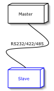

Serial Slave HOW-TO |  |
- About
- What is a Slave?
- What is a Process Image?
- Classes of Interest for the Developer
- Implementation
About | ||
This document is a tutorial for writing Modbus/Serial Slave applications utilizing
the jamod library. It explains the basics and walk's you through
a simple command line Slave implementation,that will serve the values from a
static process image on Master requests.
If you are new to Modbus, it is highly recommended to first take a look at Understanding
the Protocol (especially the section about the Serial implementation) as well as the actual protocol specifications.
What is a Slave? | ||
Thinking in terms of the Client-Server network computing paradigm, the Slave application is a Server. It has a Listener for receiving an incoming Request from the Master application (which indeed is a Client) and sends a corresponding Response, just as described in Understanding the Protocol.
In case of the serial implementation, the communication can be point-to-point
(RS232, 422, 485) or on a shared signal cable (RS 485). In both cases there can
be only one master, that acquires data from a source (data acquisition), or writes
data to a sink (device control) and one or multiple slaves.
A possible simple network setup for this tutorial is composed of two
nodes, as depicted in Figure 1.
|

|
The implementation from the jamod library will automagically construct
the actual responses for requests related to the standard Modbus data model, according
to the contents of the actually set Process Image.
The reference to the actual Process Image is stored in the Modbus Coupler a singleton
instance accessible throughout the VM.
What is a Process Image? | ||
A process image is basically a collection of Discrete Inputs, Discrete Outputs (Coils),
Input Registers and Registers.
Please refer to Understanding the Process Image for more information.
Classes of Interest for the Developer | ||
The motivation for creating jamod was to achieve an intuitive and object
oriented implementation of the Modbus protocol, in a way, that there is a natural mapping
from the domain knowledge (i.e. Modbus protocol) to the abstract class model.
The important elements in the description above (What is a Slave?) have been
highlighted and the following list represents the mapping between them and the classes from
jamod that will be needed for a slave implementation:
- Listener: ModbusSerialListener
- Process Image: ProcessImage (respectively it's direct known subclass SimpleProcessImage)
- Discrete Inputs: DigitalIn (respectively it's direct known subclass SimpleDigitalIn)
- Discrete Outputs: DigitalOut (respectively it's direct known subclass SimpleDigitalOut)
- Input Registers: InputRegister (respectively it's direct known subclass SimpleInputRegister)
- Registers: Register (respectively it's direct known subclass SimpleRegister)
- Modbus Coupler: ModbusCoupler
Implementation | ||
As the idea is to provide a tutorial in form of a very simple command line example, it will consist of only one class and most of the work will be done in the entry method (public static void main(String args[])). This is probably not the way jamod will be usually employed in OO designs, but we hope it serves the demonstrative purpose.
Now let's start writing code. We need a simple Java application skeleton, with imports of all jamod packages:
import net.wimpi.modbus.net.*;
import net.wimpi.modbus.procimg.*;
import net.wimpi.modbus.ModbusCoupler;
import net.wimpi.modbus.util.SerialParameters;
public class SerialSlaveTest {
public static void main(String[] args) {
try {
...
...
} catch (Exception ex) {
ex.printStackTrace();
}
}//main
}//class SerialSlaveTest
Next we add the instances and variables the application will need:
/* The important instances and variables */ ModbusSerialListener listener = null; SimpleProcessImage spi = null; portname = args[0]; //the portname of the serial port to listen to
Next we will construct the process image and setup the coupler to hold the reference:
//1. Prepare a process image spi = new SimpleProcessImage(); spi.addDigitalOut(new SimpleDigitalOut(true)); spi.addDigitalOut(new SimpleDigitalOut(false)); spi.addDigitalIn(new SimpleDigitalIn(false)); spi.addDigitalIn(new SimpleDigitalIn(true)); spi.addDigitalIn(new SimpleDigitalIn(false)); spi.addDigitalIn(new SimpleDigitalIn(true)); spi.addRegister(new SimpleRegister(251)); spi.addInputRegister(new SimpleInputRegister(45)); //2. Create the coupler and set the slave identity ModbusCoupler.createModbusCoupler(spi); ModbusCoupler.getReference().setUnitID(1);
We will also need to setup the parameters for the serial communication:
//3. Set up serial parameters
SerialParameters params = new SerialParameters();
params.setPortName(portname);
params.setBaudRate(115200);
params.setDatabits(7);
params.setParity("None");
params.setStopbits(2);
Last step is to create and start the listener:
//4. Set up serial listener listener = new ModbusSerialListener(params); listener.setListening(true);
This will do the job. You can test the slave using the master application from the Serial Master HOW-TO, be sure to use equal communication parameters on both sides.
by Dieter Wimberger